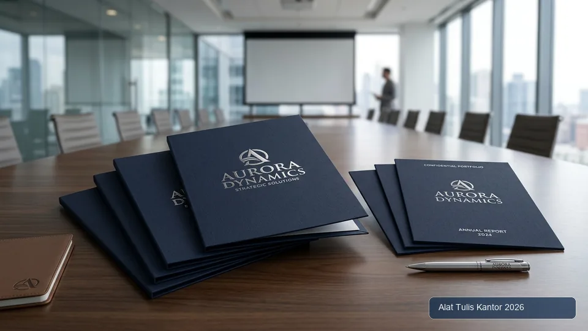
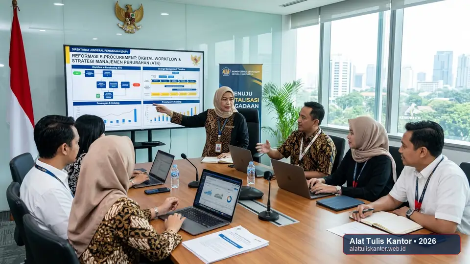

PRODUK TERLARIS

Kertas HVS A4 75gr PaperOne

Pulpen Gel Black 0.5mm (Pack)

Ordner Box File F4 75mm

Stapler & Isi Staples HD-10

Sticky Notes Post-it 3x3 (Neon)

Memilih Supplier Map Dokumen Custom Logo Perusahaan: Tips Cetak Rapih
Panduan memilih supplier map dokumen custom logo perusahaan dengan hasil cetak rapi, presisi, dan tips mendesain map branding korporat.
Baca Selengkapnya
Mengapa Divisi Packing Butuh Gunting Kertas Antilengket Khusus
Kenali alasan divisi packing membutuhkan gunting antilengket khusus untuk memotong selotip dan material perekat tanpa hambatan residu lengket.
Baca Selengkapnya
Strategi Change Management Implementasi E-Procurement ATK di Instansi Pusat
Panduan strategi change management untuk implementasi e-procurement ATK di instansi pemerintah pusat, mengatasi resistensi dan mempercepat adopsi sistem.
Baca Selengkapnya
Mengenal Stapler Tanpa Isi (Stapleless): Solusi ATK Eco-Friendly
Kenali stapler tanpa isi (stapleless) sebagai solusi ATK ramah lingkungan. Cek cara kerja, kelebihan, dan keterbatasannya dibanding stapler biasa.
Baca Selengkapnya
5 Tanda HPS Belanja ATK Berisiko Kena Temuan Mark-Up BPK
Khawatir temuan audit BPK akibat mark-up HPS belanja ATK? Kenali 5 tanda HPS berisiko dan cara memperbaikinya sebelum proses pengadaan berjalan.
Baca Selengkapnya
Kesalahan Umum yang Bikin Pembagian Paket ATK Siswa Molor
Pembagian paket ATK siswa yang lama dan melelahkan biasanya disebabkan kesalahan yang sama berulang. Kenali 5 kesalahan umum ini dan cara menghindarinya.
Baca Selengkapnya
Cara Menyusun Harga Perkiraan Sendiri (HPS) Pengadaan ATK yang Akurat
Panduan lengkap menyusun Harga Perkiraan Sendiri (HPS) pengadaan ATK yang akurat dan dapat dipertanggungjawabkan sesuai regulasi LKPP.
Baca Selengkapnya
Cetak Map Ijazah Sekolah Custom Hotprint Emas: Panduan Pengadaan
Panduan lengkap pengadaan map ijazah sekolah custom dengan hotprint emas. Cek proses cetak, estimasi biaya, dan tips memilih vendor yang tepat.
Baca Selengkapnya
Hemat Biaya Cetak: Memilih Tinta Printer Laserjet dengan Page Yield Tinggi
Hemat biaya cetak kantor dengan memilih toner printer laserjet page yield tinggi. Cek cara menghitung biaya per halaman dan rekomendasi pemilihannya.
Baca Selengkapnya
Menjaga Keamanan Siswa: Memilih Peralatan Mewarnai Anak Bebas Bahan Kimia
Panduan memilih peralatan mewarnai anak bebas bahan kimia berbahaya untuk sekolah. Cek sertifikasi keamanan cat air, spidol, dan krayon yang tepat.
Baca Selengkapnya
Cara Memilih Stapler Heavy Duty Anti Macet untuk Berkas Tebal 100 Lembar
Stapler biasa sering macet saat menjilid berkas 100 lembar? Ikuti cara memilih stapler heavy duty anti macet yang tepat untuk kebutuhan kantor Anda.
Baca Selengkapnya
Cara Menilai Kinerja Vendor ATK secara Objektif dengan Data, Bukan Asumsi
Penilaian vendor ATK yang subjektif tanpa data performa berisiko keliru. Ikuti cara menyusun scorecard vendor berbasis data untuk keputusan yang lebih akurat.
Baca Selengkapnya
Aspek Keamanan Kerja: Memilih Gunting dan Cutter Kantor yang Ergonomis
Panduan memilih gunting dan cutter kantor yang ergonomis dan aman digunakan. Cek kriteria keselamatan kerja untuk paket ATK kantor Anda.
Baca Selengkapnya
Kebijakan Kantor Hijau: Cara Menghemat ATK Tanpa Menghambat Administrasi
Terapkan kebijakan kantor hijau untuk menghemat ATK tanpa menghambat kelancaran administrasi. Cek langkah praktis dan dampaknya terhadap anggaran.
Baca Selengkapnya
Cara Negosiasi Kontrak Harga Stabil dengan Supplier Kertas HVS untuk Kantor
Takut ditipu agen perantara yang markup harga kertas HVS? Ikuti cara negosiasi kontrak harga stabil langsung dengan supplier resmi untuk kantor Anda.
Baca Selengkapnya
Sistem Auto-Reorder ATK: Solusi Digital Cegah Stok Habis Mendadak
Stok ATK tiba-tiba habis saat dibutuhkan dokumen penting? Kenali sistem auto-reorder digital yang mencegah kehabisan stok dengan notifikasi otomatis.
Baca Selengkapnya
Cara Memilih Distributor ATK dengan SLA Pengiriman Terjamin Anti Telat
Khawatir barang datang terlambat mengganggu operasional? Ikuti cara memilih distributor alat tulis kantor dengan SLA pengiriman yang benar-benar terjamin.
Baca Selengkapnya
Cara Mengatasi Kertas HVS Bergelombang dan Berjamur akibat Salah Simpan
Kertas HVS bergelombang dan berjamur karena salah penyimpanan? Ikuti cara mengatasi dan mencegahnya agar stok kertas kantor tetap awet dan sehat.
Baca Selengkapnya
Keuntungan Kontrak Kerja Sama dengan Distributor Pulpen Grosir Merk Ternama
Bingung memilih supplier dengan diskon bulk besar? Kenali keuntungan kontrak kerja sama dengan distributor pulpen grosir merk ternama bagi perusahaan.
Baca Selengkapnya
Review Lem Kertas Terkuat untuk Kerajinan Tangan dan Administrasi
Review lengkap jenis lem kertas terkuat untuk kebutuhan kerajinan tangan dan administrasi kantor. Cek perbandingan daya rekat, kecepatan kering, dan harga.
Baca Selengkapnya
Daftar Merk Alat Tulis Kantor TKDN Tinggi yang Lolos Kualifikasi LKPP
Panduan memilih kategori merk alat tulis kantor dengan TKDN tinggi yang lolos kualifikasi LKPP, plus tips menyusun HPS wajar agar terhindar temuan audit BPK.
Baca Selengkapnya
Memilih Pulpen Gel vs Ballpoint: Kelebihan untuk Tanda Tangan Dokumen
Kenali kelebihan pulpen gel vs ballpoint untuk tanda tangan dokumen penting dan kontrak. Cek kombinasi terbaik dengan kertas HVS grosir berkualitas.
Baca Selengkapnya
Cara Memenuhi Syarat TKDN agar Tidak Gagal Kualifikasi Tender ATK
Gagal kualifikasi administrasi tender karena syarat TKDN tidak cukup? Ikuti cara memenuhi dan memverifikasi TKDN produk ATK sebelum ikut tender.
Baca Selengkapnya
Cara Mencegah Anggaran ATK Sekolah Membengkak Setiap Semester
Anggaran belanja ATK sekolah membengkak tiap semester? Ikuti cara mengendalikannya dengan evaluasi pola belanja dan kontrol distribusi yang tepat.
Baca Selengkapnya
Mencari Vendor ATK Bersertifikasi Tingkat Nasional untuk Proyek Besar
Panduan mencari vendor ATK bersertifikasi tingkat nasional untuk proyek pengadaan besar instansi pemerintah. Cek kriteria dan cara verifikasinya.
Baca Selengkapnya
Daftar Perlengkapan ATK Ruang Guru yang Memperlancar Administrasi Nilai
Daftar perlengkapan ATK ruang guru yang wajib ada untuk memperlancar administrasi nilai siswa, plus tips mengatasi spidol kelas yang cepat kering.
Baca Selengkapnya
Kesan Pertama Kantor: Perlengkapan ATK Ruang Resepsionis yang Elegan
Ciptakan kesan pertama profesional dengan perlengkapan ATK ruang resepsionis yang elegan. Termasuk rekomendasi stapler heavy duty anti macet.
Baca Selengkapnya
Spidol Whiteboard Sekolah Isi Ulang: Tips Hemat Anggaran Kelas
Hemat anggaran kelas dengan spidol whiteboard isi ulang untuk sekolah. Cek juga tips memilih krayon dengan pewarna aman dan non-toksik untuk siswa.
Baca Selengkapnya
Cara Menyimpan Kertas Kantor agar Tidak Lembap dan Bikin Printer Macet
Printer kantor sering macet akibat kertas lembap? Ikuti cara menyimpan kertas kantor yang benar agar bebas paper jam dan cetakan tetap tajam.
Baca Selengkapnya
Cara Mengunci Harga Kontrak Tahunan ATK di Tengah Fluktuasi Pasar
Bingung mencari kestabilan harga kontrak tahunan ATK di tengah fluktuasi pasar? Ikuti strategi price lock dan negosiasi kontrak yang tepat berikut ini.
Baca Selengkapnya
Memilih Sticky Notes Grosir dengan Perekat Kuat untuk Kanban Board Kantor
Panduan memilih sticky notes grosir dengan perekat kuat untuk kanban board kantor agar tidak mudah jatuh. Cek jenis, ukuran, dan tips penggunaannya.
Baca Selengkapnya
Tips Menyusun Anggaran ATK Kantor Tanpa Mengorbankan Kualitas Kerja
Stok ATK tiba-tiba habis saat dibutuhkan dokumen penting? Ikuti tips menyusun anggaran ATK kantor yang efisien tanpa mengorbankan kualitas kerja tim.
Baca Selengkapnya
Cerdas Mengelola Pengadaan ATK: Mengapa Satu Supplier Lebih Baik dari Banyak Vendor
Pernah merasa kewalahan mengurus banyak vendor ATK? Pelajari cara cerdas mengelola pengadaan dengan satu supplier terpercaya untuk efisiensi tim GA.
Baca Selengkapnya
Manfaat Nyata Sistem Pengadaan ATK B2B dengan Aplikasi E-Procurement
Pahami bagaimana aplikasi e-procurement mentransformasi pengadaan alat tulis kantor B2B lewat sistem persetujuan digital, pelacakan instan, dan efisiensi biaya.
Baca Selengkapnya
Mengapa Memilih Supplier ATK Terlengkap Sangat Menghemat Waktu Procurement
Khawatir barang datang terlambat mengganggu operasional? Kenali alasan memilih supplier ATK terlengkap dapat menghemat waktu procurement secara signifikan.
Baca Selengkapnya
Keunggulan Sistem Pengadaan ATK B2B Berbasis Aplikasi E-Procurement
Kenali keunggulan sistem pengadaan alat tulis kantor B2B berbasis aplikasi e-procurement: approval digital, tracking real-time, hingga laporan otomatis.
Baca Selengkapnya
Strategi Mendapatkan Diskon Bulk Terbesar dari Distributor Alat Tulis Kantor
Bingung memilih distributor alat tulis kantor dengan diskon bulk terbaik? Cek strategi negosiasi volume dan tier diskon untuk hemat anggaran ATK perusahaan.
Baca Selengkapnya
Kertas HVS Anti Luntur: Solusi Dokumen Penting Tahan Air dan Kelembapan
Atasi tulisan tangan yang pudar dan meluber terkena air dengan kertas HVS berkualitas dan tinta tahan air. Cek tips melindungi dokumen penting kantor.
Baca Selengkapnya
Kriteria Distributor Alat Tulis Terpercaya untuk Kerja Sama Jangka Panjang
6 kriteria memilih distributor alat tulis kantor untuk kerja sama jangka panjang, bukan sekadar transaksi sekali beli. Cek indikator keandalan vendor.
Baca Selengkapnya
Mengenal Ukuran Kertas HVS Populer: F4, A4, Q4, dan Penggunaannya
Kenali perbedaan ukuran kertas HVS F4, A4, dan Q4 serta penggunaannya. Atasi masalah paper jam di printer laser dengan pemilihan kertas yang tepat.
Baca Selengkapnya
Memahami Aspek Pajak Pengadaan ATK Instansi Pemerintah: PPN & PPh
Panduan memahami aspek pajak PPN & PPh pengadaan ATK instansi pemerintah, plus tips memenuhi syarat TKDN agar tidak gagal kualifikasi administrasi tender.
Baca Selengkapnya
Memahami Perbedaan Fungsi Ordner F4 vs Map Snelhechter Kearsipan
Kenali perbedaan fungsi ordner F4 dan map snelhechter untuk kearsipan dokumen kantor. Atasi masalah binder robek dengan pilihan produk yang tepat.
Baca Selengkapnya
Panduan Pajak PPN & PPh Pengadaan ATK Pemerintah Serta Aturan Spesifikasi LKPP
Panduan lengkap menghitung PPN dan PPh Pasal 22 untuk pengadaan ATK instansi pemerintah, disertai tips menyusun spesifikasi teknis sesuai aturan LKPP agar adil.
Baca Selengkapnya
Panduan Pengadaan Kertas Gambar Grosir untuk Seni Budaya Sekolah
Tips cerdas pengadaan ATK sekolah: cara tepat belanja kertas gambar grosir untuk kelas kesenian dan panduan memilih spidol kelas awet guna menekan anggaran.
Baca Selengkapnya
Membeli Kertas Gambar Grosir untuk Pelajaran Seni Budaya di Sekolah
Panduan membeli kertas gambar grosir untuk pelajaran seni budaya di sekolah, termasuk cara memastikan bahan pewarna yang digunakan aman dan bebas racun bagi siswa.
Baca Selengkapnya
Menyusun Spesifikasi Teknis ATK Pemerintah yang Adil & Sesuai Aturan LKPP
Panduan menyusun spesifikasi teknis ATK pemerintah yang adil dan sesuai aturan LKPP, plus cara memastikan vendor tidak lambat mengirim dokumen BAST setelah barang sampai.
Baca Selengkapnya
Menata Peralatan Meja Rapat yang Profesional untuk Menyambut Klien Penting
Panduan menata peralatan meja rapat yang profesional untuk menyambut klien penting, lengkap dengan tips memilih kertas yang tidak memicu printer macet.
Baca Selengkapnya
Daftar Alat Peraga Edukatif & ATK Belajar Siswa PAUD/TK
Daftar lengkap alat peraga edukatif dan ATK penunjang belajar siswa PAUD/TK, plus solusi bagi koperasi sekolah yang kekurangan pasokan buku tulis grosir murah.
Baca Selengkapnya
Cara Mencegah Stok ATK Tiba-Tiba Habis: Checklist & Sistem Re-Order Point
Cegah stok ATK tiba-tiba habis saat dibutuhkan dokumen penting dengan checklist kebutuhan bulanan yang disesuaikan jumlah karyawan kantor Anda.
Baca Selengkapnya
Paket ATK Arsip Pajak Divisi Keuangan: Standar Bebas Lapuk 10 Tahun
Cegah dokumen arsip pajak tahunan rusak akibat folder yang cepat lapuk dengan memilih paket ATK kantor dan bahan arsip yang tepat untuk divisi keuangan.
Baca Selengkapnya
Daftar ATK Divisi Keuangan yang Wajib Selalu Tersedia Setiap Akhir Bulan
Daftar lengkap ATK yang wajib selalu tersedia di divisi keuangan setiap akhir bulan, plus tips mengorganisir meja kerja agar tumpukan dokumen tidak berantakan.
Baca Selengkapnya
Download Checklist Kebutuhan ATK Bulanan & Estimasi Anggaran Kantor
Checklist kebutuhan ATK bulanan kantor sesuai jumlah karyawan, lengkap dengan tips menyederhanakan administrasi klaim nota pembelian yang sering merepotkan staf GA.
Baca Selengkapnya
Kelebihan Membeli ATK di Grosir ATK Termurah dengan Sistem Pembayaran Tempo
Pelajari kelebihan membeli ATK di distributor alat tulis kantor dengan sistem pembayaran tempo, serta cara memilih supplier yang menyediakan diskon bulk terbaik.
Baca Selengkapnya
Mengapa Kepatuhan TKDN ATK Sangat Menentukan Kemenangan Tender Pemerintah
Pentingnya sertifikat TKDN dalam evaluasi tender LPSE, rumus HEA, dan strategi memenangkan pengadaan barang kedinasan.
Baca Selengkapnya
Cara Menyimpan Kertas HVS Agar Tidak Lembap dan Macet di Mesin Fotokopi
Panduan teknis menyimpan kertas HVS rim & kardus agar terhindar dari paper jam, gelombang, dan cetakan pudar.
Baca Selengkapnya
Mencari Vendor ATK Terdekat di Kawasan Industri Jabodetabek: SLA & Ongkir
Tips memilih distributor ATK terpercaya untuk pabrik di kawasan industri: lead time SLA, free delivery armada, dan sistem tempo.
Baca Selengkapnya
Ide Paket ATK Siswa Termurah untuk Koperasi Sekolah dan Yayasan
Panduan memilih paket ATK siswa termurah & aman dengan krayon non-toxic untuk kebutuhan koperasi sekolah dan yayasan.
Baca Selengkapnya
Cara Transaksi ATK E-Katalog untuk Instansi Pemerintah Daerah
Panduan langkah demi langkah transaksi ATK e-katalog LKPP untuk instansi pemerintah daerah dan cara mempercepat BAST.
Baca Selengkapnya
10 Merk Pulpen Terbaik untuk Menulis Cepat Tanpa Tinta Macet
Daftar 10 merk pulpen terbaik untuk menulis cepat tanpa tinta macet, plus kombinasi ideal bersama kertas HVS grosir.
Baca Selengkapnya
15 Perlengkapan Kantor Wajib Ada di Meja Kerja untuk Dukung Fokus
Daftar 15 ATK wajib yang harus selalu ada di meja kerja agar produktivitas dan fokus kerja karyawan meningkat optimal.
Baca Selengkapnya
Strategi Pengadaan ATK Grosir untuk Koperasi Sekolah: Hemat Anggaran 20–40%
Panduan teknis memilih dan memesan ATK secara grosir untuk koperasi sekolah dan yayasan, agar anggaran lebih efisien setiap tahun ajaran.
Baca Selengkapnya
Panduan Teknis E-Purchasing ATK via E-Katalog LKPP: 8 Tahap dari SP hingga SP2D
Referensi teknis proses e-purchasing ATK di LKPP: dari persiapan akun SPSE, pembuatan Surat Pesanan, hingga pembayaran SP2D sesuai regulasi.
Baca Selengkapnya
SOP Pengadaan ATK Sekolah untuk Persiapan Tahun Ajaran Baru
4 tahap SOP pengadaan ATK sekolah dengan sistem pre-packing per kelas yang memangkas waktu pengemasan hingga 80%.
Baca Selengkapnya
Paket ATK Kantor Rapi: Solusi Meja Kerja Bebas Tumpukan Kertas
Isi paket ATK dengan organizer & folder bersekat untuk mengatasi meja kerja karyawan baru yang berantakan.
Baca Selengkapnya
SOP Pengadaan ATK: Solusi Klaim Nota Pembelian Tanpa Ribet Administrasi
Hilangkan ribetnya klaim nota pembelian ATK manual dengan sistem invoice konsolidasi bulanan dari satu vendor.
Baca Selengkapnya
Rekomendasi Paket ATK Kantor untuk Onboarding Kit Karyawan Baru
Paket ATK kantor hemat & profesional untuk onboarding kit karyawan baru, lengkap dengan tabel harga dan cara pesan bulk.
Baca Selengkapnya
SOP Pengadaan ATK Bebas Selisih untuk Tim General Affair
6 langkah SOP pengadaan alat tulis kantor yang teruji untuk menekan selisih anggaran bulanan tim GA.
Baca Selengkapnya
Cara Menemukan Distributor ATK Resmi & Berlegalitas B2B
5 kriteria wajib memilih distributor alat tulis kantor resmi & berlegalitas sebelum tanda tangan kontrak B2B.
Baca Selengkapnya
Distributor Alat Tulis Kantor Terpercaya di Malang
Panduan memilih distributor ATK di Malang untuk kebutuhan pengadaan kantor, sekolah, dan instansi pemerintah.
Baca Selengkapnya
Supplier ATK Kantor untuk Perusahaan di Surabaya
Kenali kriteria supplier ATK yang tepat bagi perusahaan di Surabaya untuk mendukung operasional kantor.
Baca Selengkapnya
Pengadaan ATK untuk Sekolah dan Kampus
Tips menyusun kebutuhan ATK untuk sekolah dan kampus agar proses pengadaan lebih efisien dan tepat anggaran.
Baca Selengkapnya
Cara Memilih Vendor ATK yang Tepat
Panduan praktis memilih vendor alat tulis kantor yang terpercaya untuk kebutuhan pengadaan instansi Anda.
Baca Selengkapnya
Tips Pengadaan ATK untuk Instansi Pemerintah
Panduan lengkap pengadaan alat tulis kantor untuk instansi pemerintah sesuai dengan regulasi yang berlaku.
Baca SelengkapnyaBelum Ada Artikel dalam Kategori Ini
Silakan pilih filter kategori artikel lainnya.